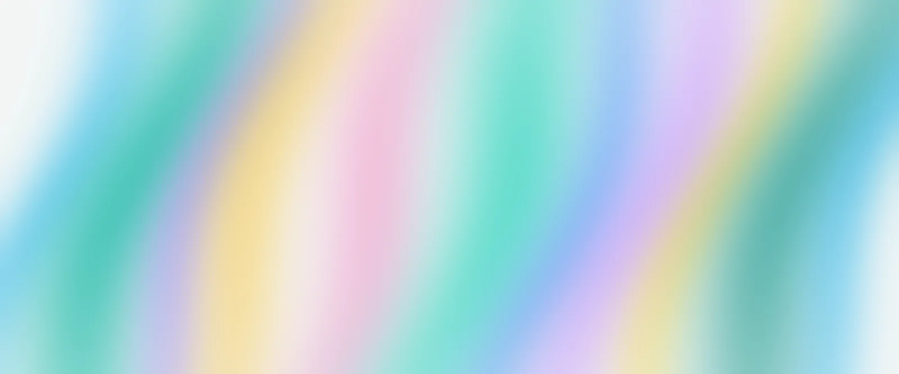

A reeded-glass panel in one WebGL shader. Move your mouse or finger over it. Nothing here is linked from the site yet.

Cost: one full-screen triangle, eight texture taps per pixel, canvas capped at 1.5x pixel ratio. It stops drawing when off screen or in a hidden tab. With reduced motion it draws a single still frame and only redraws when you move the pointer.